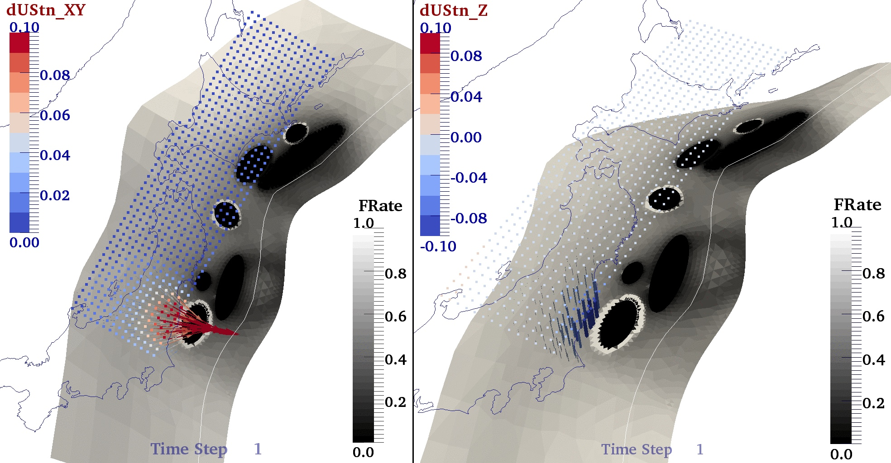

{kind=link}
Ravi V. S. Kanda Research
Crustal Deformation & Seismic Hazard
Seismic hazard based on complete seismic cycle simulations
Click on the image below to view an animation-loop of model ruptures and surface displacements over 75 yrs prior to a simulated Tohoku-oki M9 megathrust event.
I am interested in the potential geodetic signature of mechanical stress shadows surrounding inferred major seismic asperities along the subduction megathrust. Such stress shadows result from a decrease in creep rates late in the interseismic period. The Japan-Kurile megathrust was used to test this hypothesis. The rupture history along this megathrust is simplified as the repeated rupture of several asperities, each with its own fixed recurrence interval. In these models, megathrust creep throughout the interseismic period evolves according to velocity strengthening friction, as opposed to common kinematic back-slip models of locked or partially locked (i.e. coupled) regions of the megathrust. Such backslip models are usually constrained by onshore geodetic data and typically find spatially extensive and smooth estimates of plate coupling, a likely consequence of model regularization necessitated by poor model resolution. Of course, these large coupled regions could also correspond to seismogenic asperities, some of which have not experienced a significant earthquake historically. A subset of existing kinematic models of coupling along the Japan Trench, particularly those that use both horizontal and vertical geodetic data, have inferred a surprisingly deep (∼100 km) locked zone along the megathrust or have called upon complex, poorly constrained megathrust processes, such as subduction erosion, to explain the geodetic observations. Here, two plausible scenarios for the distributions of asperities on a realistic 3D Japan-Kurile megathrust off NE Japan are explored. These scenarios reflect common assumptions made before and after the 2011 Mw 9 Tohoku-oki earthquake. We find that models that include two shallow M9-class asperities (one corresponding to the 2011 Tohoku-Oki earthquake and one offshore of Hokkaido) and associated stress-shadows can explain geodetic observations of interseismic strain along the eastern halves of Honshu and Hokkaido. Specifically, models including localized fault creep can explain most of the observed long-term vertical subsidence in this region during the past century and thus appealing to processes such as deep locking or subduction erosion may not be required.
![[PDF]](../images/pdfico.png) Kanda, R. V. S., E. A. Hetland, and M. Simons (2013; online Nov. 2012), Asperity model for fault creep and interseismic deformation in northeastern Japan, Geoph. J. Intl., 192, p.38-57, doi: 10.1093/gji/ggs028.
Kanda, R. V. S., E. A. Hetland, and M. Simons (2013; online Nov. 2012), Asperity model for fault creep and interseismic deformation in northeastern Japan, Geoph. J. Intl., 192, p.38-57, doi: 10.1093/gji/ggs028.
- Medina-Luna, L., S. E. West, L. Bai, E.A. Hetland, J. Ritsema, and R. V. S. Kanda (2012), Aftershocks of the 2011 Tohoku-Oki Earthquake and Their Relation to Stresses in the Japan Trench Megathrust Seismic Cycle, Seism. Soc. Am. Annual Meeting.
- Kanda, R. V. S., E. A. Hetland, M. Simons (2010), Persistence of Coseismic Rupture Asperities as Inferred from Interseismic Geodetic Observations from Northeastern Japan, EOS Trans AGU, 91(53), Fall Meet. Suppl., Abstract T51F-04.
- Kanda, R. V. S., E. A. Hetland, M. Simons, S. E. Owen, and F. W. Webb (2008), Can Interseismic Geodetic Observations Resolve Persistent Rupture Asperities? A study of the Japan trench off Tohoku. EOS Trans AGU, 89(53), Fall Meet. Suppl., Abstract T23A-1989.
Elastic deformation models, their sensitivity to geometry and data-distribution
Geodetic observations of interseismic surface deformation in the vicinity of subduction zones are frequently interpreted using simple kinematic elastic dislocation models (EDMs). Here, we develop a kinematic EDM that simulates plate subduction over the interseismic period (the elastic subducting plate model (ESPM)) having only 2 more degrees of freedom than the well-established back slip model (BSM): an elastic plate thickness and the fraction of flexural stresses due to bending at the trench that are released continuously. Unlike the BSM, in which steady state deformation in both plates is assumed to be negligible, the ESPM includes deformation in the subducting and overriding plates (owing to plate thickness), while still preserving the correct sense of convergence velocity between the subducting and overriding plates, as well as zero net steady state vertical offset between the two plates when integrated over many seismic cycles. The ESPM links elastic plate flexure processes to interseismic deformation and helps clarify under what conditions the BSM is appropriate for fitting interseismic geodetic data at convergent margins. We show that the ESPM is identical to the BSM in the limiting case of zero plate thickness, thereby providing an alternative motivation for the BSM. The ESPM also provides a consistent convention for applying the BSM to any megathrust interface geometry. Even in the case of nonnegligible plate thickness, the deformation field predicted by the ESPM reduces to that of the BSM if stresses related to plate flexure at the trench are released either continuously and completely at shallow depths during the interseismic period or deep in the subduction zone (below ~100 km). However, if at least a portion of these stresses are not continuously released in the shallow portion of the subduction zone (via seismic or aseismic events), then the predicted surface velocities of these two models can differ significantly at horizontal distances from the trench equivalent to a few times the effective interseismic locking depth.
An important aspect of EDMs is that the geometry of the megathrust interface used in these models has a first order effect on their predicted surface deformation. We next systematically explored the sensitivity of the surface velocity field predicted by EDMs both early and late in the seismic cycle, to parameterizations of megathrust interface geometry, effective subducting plate thickness, and gradual transitions in apparent plate coupling. We focused on how these parameterizations affect the hingeline – the location where vertical velocities switch from subsidence to uplift – as well as the location of the peak uplift rates. We found that these surface observables are much less sensitive to uncertainties in dip at the downdip end of the seismogenic zone for realistic curved faults in comparison to planar faults. For realistic megathrust geometries (planar or curved) having gradual transitions in apparent plate coupling, we found that the extent of locking is best approximated at the surface by the location of peak uplift rates. Therefore, the common notion – based on shallow-dipping planar faults – that the hingeline is located directly above the maximum depth extent of the locked plate interface is generally incorrect. Using the hingeline as the basis for coupling may lead to a significant underestimation of seismic hazard early in the cycle, as well as during the interseismic period. This analysis also demonstrates the importance of considering both vertical and horizontal velocities for determining seismic source extents, as well as interseismic coupling, on the megathrust. We present tradeoffs between the geometry of the megathrust and fault coupling along its surface. Such tradeoffs can assist in the planning of campaign-GPS or field geologic surveys, and help improve seismic hazard estimates in active subduction zones.
- Kanda, R. V. S., and M. Simons (2010), An elastic plate model for interseismic deformation in subduction zones, J. Geophys. Res., 115, B03405, doi:10.1029/2009JB006611.
- Kanda, R. V. S., and M. Simons (2012), Practical implications of the geometrical sensitivity of Elastic Dislocation models for field geologic surveys, Tectonophysics, 560–561, p. 94–104, doi: 10.1016/j.tecto.2012.06.040.
- Kanda, R. V. S. and M. Simons (2006), Simple Elastic Dislocation Models for Interpreting Interseismic Deformation in Subduction Zones, EOS Trans AGU, 87(52), Fall Meet. Suppl., Abstract T12C-02.
Ph.D Dissertation
- Mechanical Models for Interseismic Deformation in Subduction Zones.
(2010, Geophysics, Caltech. Supervisor: Prof. Mark Simons)